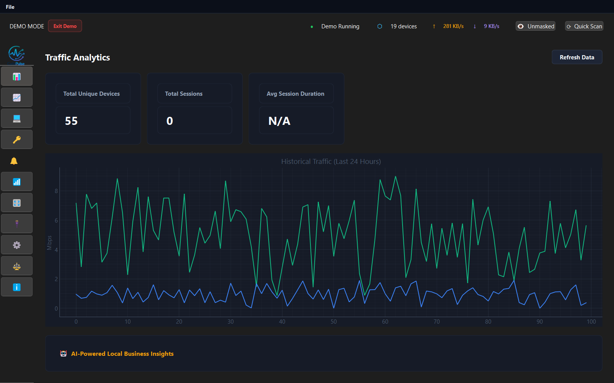
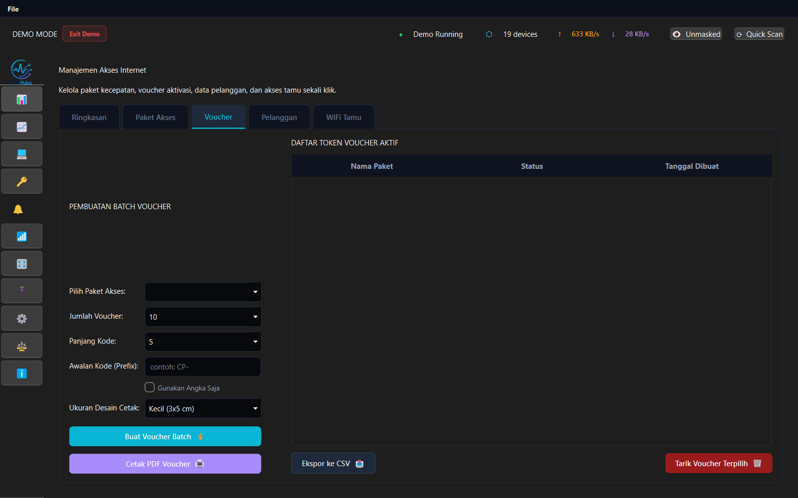
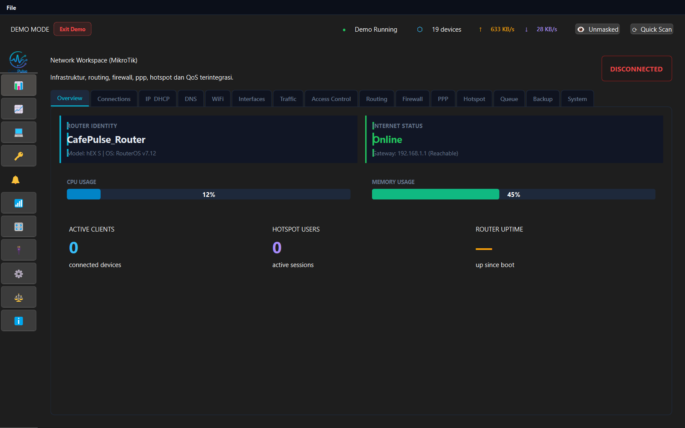
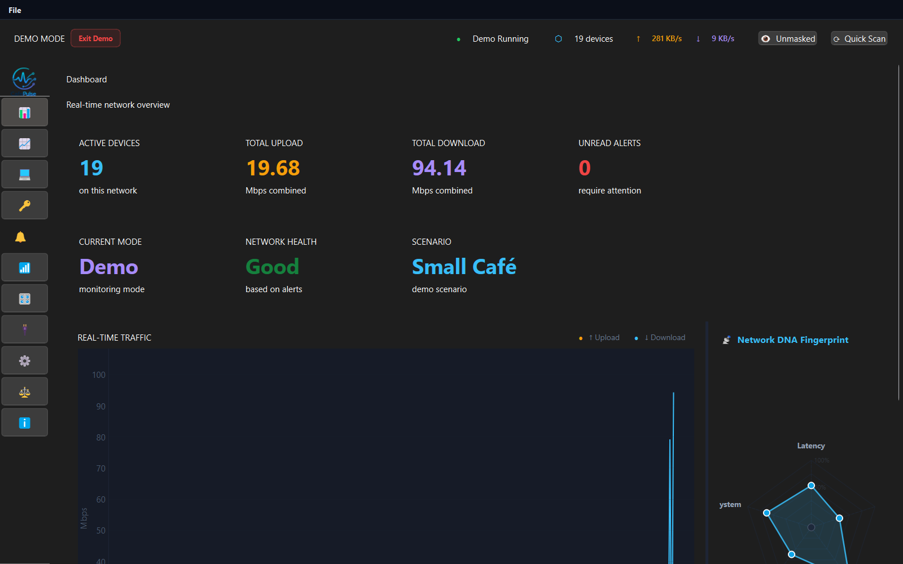

CafePulse adapte dynamiquement son interface et ses contrôles en fonction de votre rôle actif, vous offrant les outils parfaits pour la tâche.
Axé sur les métriques d'établissement et les rapports de performance. Idéal pour les propriétaires de cafés et les gestionnaires de sites.

Optimisé pour les tâches quotidiennes, la génération de vouchers et l'observation des clients. Idéal pour les opérateurs de boutique et le personnel administratif.

Mise en page de configuration complète pour les interfaces, attributions DHCP et tableaux de détails. Idéal pour les techniciens réseau.

Scripts d'automatisation avancés, contrôles de pare-feu et profils d'exécution de commandes. Idéal pour les ingénieurs réseau.

Un système opérationnel professionnel nécessite des outils approfondis. CafePulse inclut des modules construits à partir de retours terrain.
Maintient un cache local des fabricants MAC pour que les périphériques connectés soient immédiatement résolus en descriptions de fournisseurs standard sans appeler des API externes.
Utilise une vérification de connexion thread-safe avec un backoff exponentiel limité. Si le routeur tombe ou se déconnecte, CafePulse restaure automatiquement les widgets.
Les mots de passe de routeur et les informations d'identification API sont chiffrés et stockés localement. Vos informations d'identification ne traversent jamais la carte d'interface réseau locale.